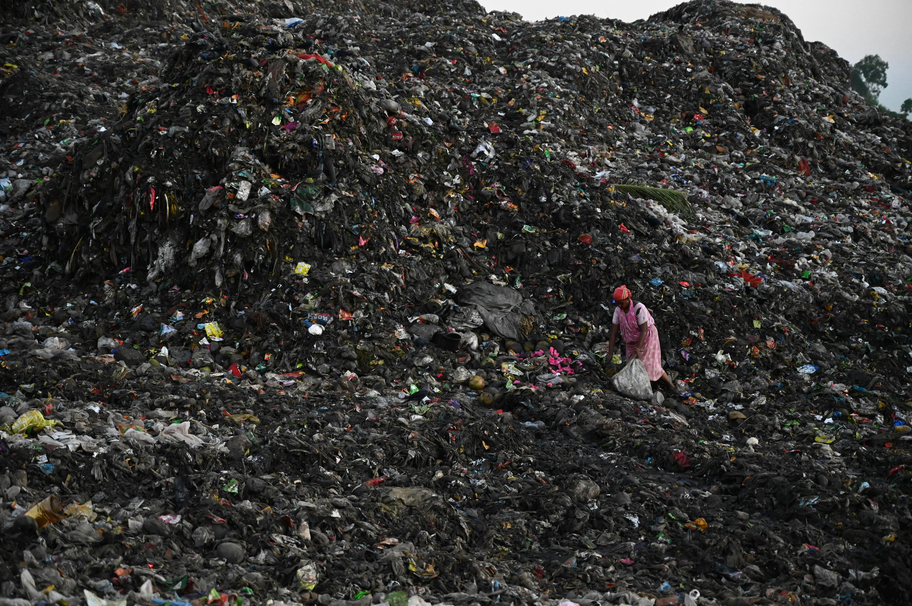

Welcome to Nuru Youth Waste Management Website
Sample Abandoned Dumping Sites

This image shows a typical abandoned dumping site that requires urgent cleaning and waste management efforts.

This site highlights the impact of improper waste disposal on the environment and the need for community action.